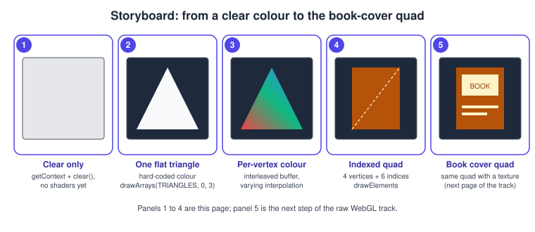
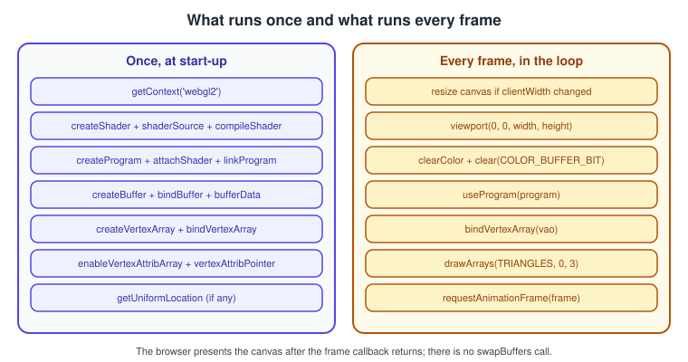
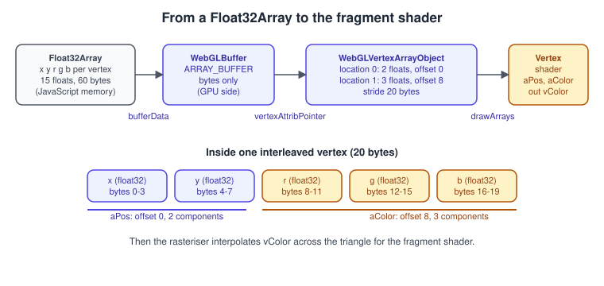
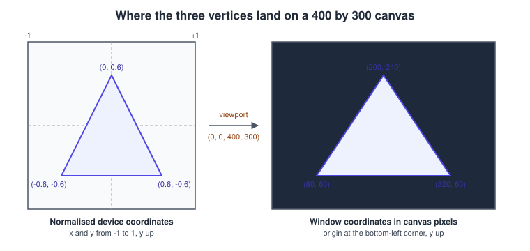

Your First Triangle in WebGL 2
|
This content was generated with the assistance of AI and should be verified against the official documentation before being relied on in production. |
Drawing one triangle in WebGL takes about sixty lines, because the API does almost nothing for you: there is no default shader, no default camera and no notion of a shape. You supply two small programs that run on the GPU, a block of vertex data, and a description of how that data is laid out. Once those pieces are understood, every later WebGL page (textures, lighting, shadows, picking) is the same recipe with more data and longer shaders. This page builds the program one piece at a time, explains every call and the options it accepts, and finishes with the common reasons for a black canvas.
The facts were checked in November 2026. The versions documented are WebGL 2.0 and GLSL ES 3.00 (#version 300 es). The code is plain
JavaScript in one HTML file and runs in any current evergreen browser (Chrome 56, Firefox 51, Edge 79 and Safari 15 and later, on
desktop and mobile); WebGL 1 differences are called out where they matter, and the version and support story is in
WebGL Versions and Browser Support. No library and no build step is
needed: save the file and open it, or serve the folder with any static server.
This is step 1 of the raw WebGL track of the Bookshelf example. The track continues with a textured book-cover quad (Textures and Samplers), a lit rotating book (Lighting in Shaders) and an instanced shelf. The same first triangle in desktop OpenGL is Hello Triangle, and the shortest browser introduction is Canvas, WebGL & Three.js; this page goes deeper than both. The stages the triangle travels through are explained in The WebGL Rendering Pipeline.
The steps

The strip shows the Bookshelf track’s first steps. Panels 1 to 4 are built on this page; panel 5 comes next. In order, the program does:
-
Get a context. Find the canvas, size its drawing buffer, call
getContextwith thewebgl2string. -
Compile the shaders. A vertex shader and a fragment shader, each checked for errors.
-
Link them into a program, which is what you select before drawing.
-
Upload the vertex data into a buffer object.
-
Describe the layout in a vertex array object: which buffer, which attributes, which format.
-
Every frame: match the canvas size to the screen, set the viewport, clear, select the program, bind the vertex array, draw.

Steps 1 to 5 run once and create objects that live on the GPU side; step 6 runs in the animation loop. Keeping that split in the code from the start is the main habit that separates a fast WebGL program from a slow one: creating buffers or compiling shaders inside the frame loop is the most common beginner performance bug.
Step 1: the canvas and the context
A <canvas> element has two sizes. Its CSS size is how large it appears on the page. Its drawing buffer size is the width and height
attributes, in device pixels, and defaults to 300 by 150 whatever the CSS says. WebGL renders into the drawing buffer and the browser scales it to the CSS
size, so a canvas styled to fill a 1920-pixel-wide window but left at 300 pixels looks blurry. The fix is to set the buffer size from the
element’s measured size multiplied by devicePixelRatio, shown in the full program below.
getContext("webgl2", attributes) returns a WebGL2RenderingContext, or null if WebGL 2 is unavailable. The attributes (alpha, antialias,
depth, stencil, preserveDrawingBuffer, powerPreference, failIfMajorPerformanceCaveat and others) are fixed at creation and are listed in
WebGL Versions and Browser Support. The defaults suit a first
program. Two behaviours are worth knowing now:
-
The drawing buffer is presented to the page after the JavaScript task that drew into it ends and, by default, its contents are then cleared. There is no
swapBuffers. Draw a complete frame inside onerequestAnimationFramecallback; drawing half a frame in one task and the rest in another shows a flickering half-image unlesspreserveDrawingBufferis true. -
Changing
canvas.widthorcanvas.height, even to the same value, reallocates and clears the drawing buffer. Do it only when the size actually changed.
The vertex data and how it reaches the shader

Three objects cooperate, and the names confuse beginners:
-
The buffer (
WebGLBuffer) is GPU-side memory. It stores bytes and has no idea what they mean. -
The vertex array object (
WebGLVertexArrayObject, VAO) is a small table of state: for each attribute number, which buffer it reads, the component type and count, the stride and the offset, and whether the attribute is enabled. In WebGL 2 a VAO is core; in WebGL 1 it needs theOES_vertex_array_objectextension. A WebGL 2 context always has a default VAO bound, but you should create your own for each mesh. -
The vertex shader inputs (
in vec2 aPos,in vec3 aColor) receive, per vertex, the values the attributes yield.
Pure data (the buffer) is separated from its interpretation (the VAO), so one buffer can be read with different layouts, and all of a
mesh’s attribute state is switched with a single bindVertexArray call. The detailed rules, including uniform blocks and std140 padding, are in
Buffers, Attributes, Uniforms and VAOs. For this page the vertices are
interleaved: each vertex stores its two position floats followed by its three colour floats, so one vertex is 20 bytes and the
second attribute begins 8 bytes into it.
Steps 2 and 3: shaders and the program
A shader is a small program in GLSL ES. The vertex shader runs once per vertex and must write gl_Position, the vertex position in clip
space. The fragment shader runs once per pixel-sized fragment covered by the triangle and writes a colour. The language is the subject of
GLSL ES 1.00 and 3.00; this is what the first program needs.
#version 300 es
// vertex shader
layout(location = 0) in vec2 aPos;
layout(location = 1) in vec3 aColor;
out vec3 vColor;
void main() {
vColor = aColor;
gl_Position = vec4(aPos, 0.0, 1.0);
}#version 300 es
// fragment shader
precision highp float;
in vec3 vColor;
out vec4 outColor;
void main() {
outColor = vec4(vColor, 1.0);
}Things that cause errors in these twelve lines, in order of how often they bite:
-
#version 300 esmust be the very first thing in the source: no blank line, no comment and no whitespace before it. A JavaScript template literal that starts on the next line after the backtick puts a newline first and the compile fails with a version error. Trim the string or start the text immediately after the backtick. -
The fragment shader has no default float precision in GLSL ES, so it must declare one (
precision highp float;ormediump). The vertex shader defaults tohighp. (highpin fragment shaders is optional in WebGL 1 and mandatory in WebGL 2.) -
The vertex
outand the fragmentinwith the same name and type are matched by the linker. The rasteriser interpolates the three vertex colours across the triangle, which is why the corners are red, green and blue and the middle is a blend. -
The fragment shader declares its own output. In GLSL ES 1.00 (WebGL 1) you write
gl_FragColorand useattributeandvaryinginstead ofinandout. -
layout(location = n)fixes the attribute number in the shader, so the JavaScript does not needgetAttribLocation. Without it, the linker picks numbers and you must ask for them.
The compile and link functions can fail without throwing an exception. You must look at their status:
function compileShader(gl, type, source) {
const shader = gl.createShader(type); // gl.VERTEX_SHADER or gl.FRAGMENT_SHADER
gl.shaderSource(shader, source);
gl.compileShader(shader);
if (!gl.getShaderParameter(shader, gl.COMPILE_STATUS)) {
const log = gl.getShaderInfoLog(shader);
gl.deleteShader(shader);
throw new Error("Shader compile failed:\n" + log);
}
return shader;
}
function linkProgram(gl, vs, fs) {
const program = gl.createProgram();
gl.attachShader(program, vs);
gl.attachShader(program, fs);
gl.linkProgram(program);
if (!gl.getProgramParameter(program, gl.LINK_STATUS)) {
const log = gl.getProgramInfoLog(program);
gl.deleteProgram(program);
throw new Error("Program link failed:\n" + log);
}
// The linked program keeps what it needs; the shader objects can go.
gl.detachShader(program, vs);
gl.detachShader(program, fs);
gl.deleteShader(vs);
gl.deleteShader(fs);
return program;
}Reading the status immediately after compiling forces the browser to wait for the shader build, which stalls the page. For a single triangle that is
harmless; for a real application with dozens of programs, compile everything first, link everything, and only then check the results, or use the
KHR_parallel_shader_compile extension to poll without blocking. That technique is described in
Performance and Debugging. MDN’s best-practices page recommends exactly this order.
Source: MDN: WebGL best practices
Steps 4 and 5: the buffer and the vertex array object
const vertices = new Float32Array([
// x y r g b
0.0, 0.6, 1.0, 0.2, 0.2, // top, red
-0.6, -0.6, 0.2, 1.0, 0.2, // bottom left, green
0.6, -0.6, 0.2, 0.2, 1.0, // bottom right, blue
]);
const vao = gl.createVertexArray();
gl.bindVertexArray(vao); // everything below is recorded in this VAO
const vbo = gl.createBuffer();
gl.bindBuffer(gl.ARRAY_BUFFER, vbo);
gl.bufferData(gl.ARRAY_BUFFER, vertices, gl.STATIC_DRAW);
const stride = 5 * Float32Array.BYTES_PER_ELEMENT; // 20 bytes per vertex
gl.enableVertexAttribArray(0);
gl.vertexAttribPointer(0, 2, gl.FLOAT, false, stride, 0); // aPos
gl.enableVertexAttribArray(1);
gl.vertexAttribPointer(1, 3, gl.FLOAT, false, stride, 2 * Float32Array.BYTES_PER_ELEMENT); // aColor
gl.bindVertexArray(null);bufferData(target, data, usage) allocates the buffer and copies the typed array in. The usage argument is a hint to the driver about how
often the contents change and who reads them:
| Usage | Meaning | Typical use |
|---|---|---|
|
written once, drawn many times |
meshes that never change, such as the book |
|
written repeatedly, drawn many times |
per-frame particle or instance data |
|
written once, drawn a few times |
data that changes every frame |
|
read back from the GPU |
transform feedback results |
|
GPU to GPU copies |
transform feedback feeding another draw |
vertexAttribPointer(index, size, type, normalized, stride, offset) takes six arguments:
| Argument | Meaning |
|---|---|
|
The attribute number: 0 and 1 here, matching |
|
Components per vertex, 1 to 4. Two floats for |
|
The data type in the buffer: |
|
For integer types, whether to map the range to 0 to 1 (unsigned) or -1 to 1 (signed). Colours stored as |
|
Bytes from one vertex to the next. 0 means tightly packed with the same attribute only. |
|
Byte offset of this attribute inside the vertex, always a number of bytes, never elements. |
For attributes that the shader reads as integers (ivec, uvec), WebGL 2 adds vertexAttribIPointer, which does not convert to float. The
call reads from the buffer currently bound to ARRAY_BUFFER at the moment it is made; the association is then stored in the VAO. That is why the
buffer is bound before the pointer calls and why unbinding it afterwards does not matter.
Step 6: clear, set the viewport, draw
The core of each frame is four calls:
-
gl.viewport(x, y, width, height)maps normalised device coordinates to pixels of the drawing buffer. Its default is the buffer size at context creation, and it is not updated when you resize the canvas: set it every frame or after every resize. A viewport that is too small draws a miniature scene in a corner; one that does not match the aspect ratio stretches it. -
gl.clearColor(r, g, b, a)andgl.clear(gl.COLOR_BUFFER_BIT)fill the buffer. AddDEPTH_BUFFER_BITandSTENCIL_BUFFER_BITwhen those buffers exist and are used. The clear colour is premultiplied alpha whenpremultipliedAlphais true, so(0, 0, 0, 0)is a fully transparent canvas. -
gl.useProgram(program)selects the shaders;gl.bindVertexArray(vao)selects the vertex layout. -
gl.drawArrays(mode, first, count)drawscountvertices starting atfirst.
The mode selects how vertices form primitives:
| Mode | Primitive from vertices v0, v1, v2, v3 … |
|---|---|
|
one point per vertex, size from |
|
lines v0-v1, v2-v3, … |
|
lines v0-v1, v1-v2, v2-v3, … |
|
as a strip, plus a closing line to v0 |
|
triangles (v0, v1, v2), (v3, v4, v5), … |
|
triangles (v0, v1, v2), (v2, v1, v3), … sharing two vertices each |
|
triangles (v0, v1, v2), (v0, v2, v3), … around v0 |
Triangles are front-facing when their vertices appear counter-clockwise on the screen, the default of frontFace. Face culling is off by default in
WebGL, so a clockwise triangle still draws; enable it with gl.enable(gl.CULL_FACE) once your meshes have consistent winding.
The numbers in the buffer are in normalised device coordinates (NDC): x and y range from -1 to 1 across the viewport, with y pointing up. The viewport transform turns those into window pixels, and the origin of window coordinates is the bottom-left corner, unlike the top-left origin of the 2D canvas and the DOM.

The full chain, clip space, perspective divide, viewport transform and the tests that follow, is in The WebGL Rendering Pipeline; matrices that place and project a book arrive in Transforms and Cameras.
The complete program
Save this as index.html and open it. It resizes for high-DPI screens, checks every compile and link step, and reports WebGL errors
during development.
<!doctype html>
<html lang="en">
<head>
<meta charset="utf-8">
<meta name="viewport" content="width=device-width, initial-scale=1">
<title>First triangle, WebGL 2</title>
<style>
html, body { margin: 0; height: 100%; background: #111827; }
canvas { display: block; width: 100vw; height: 100vh; }
</style>
</head>
<body>
<canvas id="gl"></canvas>
<script type="module">
const canvas = document.getElementById("gl");
const gl = canvas.getContext("webgl2");
if (!gl) {
document.body.textContent = "WebGL 2 is not available in this browser.";
throw new Error("WebGL 2 unavailable");
}
// The first character of each shader source must be the # of the version line.
const vertexSource = `#version 300 es
layout(location = 0) in vec2 aPos;
layout(location = 1) in vec3 aColor;
out vec3 vColor;
void main() {
vColor = aColor;
gl_Position = vec4(aPos, 0.0, 1.0);
}`;
const fragmentSource = `#version 300 es
precision highp float;
in vec3 vColor;
out vec4 outColor;
void main() {
outColor = vec4(vColor, 1.0);
}`;
function compileShader(type, source) {
const shader = gl.createShader(type);
gl.shaderSource(shader, source);
gl.compileShader(shader);
if (!gl.getShaderParameter(shader, gl.COMPILE_STATUS)) {
const log = gl.getShaderInfoLog(shader);
gl.deleteShader(shader);
throw new Error("Shader compile failed:\n" + log);
}
return shader;
}
function linkProgram(vs, fs) {
const program = gl.createProgram();
gl.attachShader(program, vs);
gl.attachShader(program, fs);
gl.linkProgram(program);
if (!gl.getProgramParameter(program, gl.LINK_STATUS)) {
const log = gl.getProgramInfoLog(program);
gl.deleteProgram(program);
throw new Error("Program link failed:\n" + log);
}
gl.detachShader(program, vs);
gl.detachShader(program, fs);
gl.deleteShader(vs);
gl.deleteShader(fs);
return program;
}
// Development helper: drain the error queue and name the first error found.
const errorNames = new Map([
[gl.INVALID_ENUM, "INVALID_ENUM"], [gl.INVALID_VALUE, "INVALID_VALUE"],
[gl.INVALID_OPERATION, "INVALID_OPERATION"], [gl.OUT_OF_MEMORY, "OUT_OF_MEMORY"],
[gl.INVALID_FRAMEBUFFER_OPERATION, "INVALID_FRAMEBUFFER_OPERATION"],
[gl.CONTEXT_LOST_WEBGL, "CONTEXT_LOST_WEBGL"],
]);
function checkError(where) {
let err;
while ((err = gl.getError()) !== gl.NO_ERROR) {
console.error(`WebGL error ${errorNames.get(err) ?? err} after ${where}`);
}
}
const program = linkProgram(
compileShader(gl.VERTEX_SHADER, vertexSource),
compileShader(gl.FRAGMENT_SHADER, fragmentSource),
);
const vertices = new Float32Array([
0.0, 0.6, 1.0, 0.2, 0.2,
-0.6, -0.6, 0.2, 1.0, 0.2,
0.6, -0.6, 0.2, 0.2, 1.0,
]);
const FLOAT = Float32Array.BYTES_PER_ELEMENT;
const vao = gl.createVertexArray();
gl.bindVertexArray(vao);
const vbo = gl.createBuffer();
gl.bindBuffer(gl.ARRAY_BUFFER, vbo);
gl.bufferData(gl.ARRAY_BUFFER, vertices, gl.STATIC_DRAW);
gl.enableVertexAttribArray(0);
gl.vertexAttribPointer(0, 2, gl.FLOAT, false, 5 * FLOAT, 0);
gl.enableVertexAttribArray(1);
gl.vertexAttribPointer(1, 3, gl.FLOAT, false, 5 * FLOAT, 2 * FLOAT);
gl.bindVertexArray(null);
checkError("setup");
function resizeToDisplaySize() {
const dpr = window.devicePixelRatio || 1;
const width = Math.max(1, Math.round(canvas.clientWidth * dpr));
const height = Math.max(1, Math.round(canvas.clientHeight * dpr));
if (canvas.width !== width || canvas.height !== height) {
canvas.width = width; // reallocates and clears the drawing buffer
canvas.height = height;
}
}
function frame() {
resizeToDisplaySize();
gl.viewport(0, 0, gl.drawingBufferWidth, gl.drawingBufferHeight);
gl.clearColor(0.07, 0.09, 0.15, 1.0);
gl.clear(gl.COLOR_BUFFER_BIT);
gl.useProgram(program);
gl.bindVertexArray(vao);
gl.drawArrays(gl.TRIANGLES, 0, 3);
checkError("frame"); // remove or guard in production: getError can stall the pipeline
requestAnimationFrame(frame);
}
requestAnimationFrame(frame);
</script>
</body>
</html>Source: MDN: Getting started with WebGL
Points about this listing:
-
gl.drawingBufferWidthandgl.drawingBufferHeightare used for the viewport rather than the canvas attributes, because the browser may allocate a smaller buffer than requested if the size exceeds a device limit. -
The loop redraws every frame although nothing moves. For a static scene, draw once and again only on resize; continuous rendering of an unchanging picture wastes power on phones and laptops.
-
checkErrorcallsgetError, a synchronous round trip to the GPU process. It is a development tool. MDN states that a well-formed page should generate onlyOUT_OF_MEMORYandCONTEXT_LOST_WEBGLerrors, and that browsers stop printing detailed messages after a limit (32 in Firefox). -
A canvas with CSS size zero (for example inside a hidden container) makes
resizeToDisplaySizeclamp to one pixel and nothing is drawn.ResizeObserverwithdevice-pixel-content-boxgives the exact device-pixel size and avoids moiré at fractional zoom levels; see Performance and Debugging.
Indexed drawing: the book-cover quad
A rectangle needs four corners but two triangles need six vertices. Indexed drawing stores each corner once and lists the triangles in an
element array buffer. The quad below is panel 4 of the storyboard and becomes the textured book cover on the next step, so the vertices already carry
texture coordinates (u, v) instead of colours.
// x, y, u, v : a portrait book cover, 0.8 wide and 1.2 tall in NDC
const quad = new Float32Array([
-0.4, -0.6, 0.0, 0.0,
0.4, -0.6, 1.0, 0.0,
0.4, 0.6, 1.0, 1.0,
-0.4, 0.6, 0.0, 1.0,
]);
const indices = new Uint16Array([0, 1, 2, 0, 2, 3]); // two counter-clockwise triangles
const quadVao = gl.createVertexArray();
gl.bindVertexArray(quadVao);
const quadVbo = gl.createBuffer();
gl.bindBuffer(gl.ARRAY_BUFFER, quadVbo);
gl.bufferData(gl.ARRAY_BUFFER, quad, gl.STATIC_DRAW);
gl.enableVertexAttribArray(0);
gl.vertexAttribPointer(0, 2, gl.FLOAT, false, 16, 0); // position
gl.enableVertexAttribArray(1);
gl.vertexAttribPointer(1, 2, gl.FLOAT, false, 16, 8); // uv
const ibo = gl.createBuffer();
gl.bindBuffer(gl.ELEMENT_ARRAY_BUFFER, ibo); // the binding is stored in the VAO
gl.bufferData(gl.ELEMENT_ARRAY_BUFFER, indices, gl.STATIC_DRAW);
gl.bindVertexArray(null);
// in the frame:
gl.bindVertexArray(quadVao);
gl.drawElements(gl.TRIANGLES, 6, gl.UNSIGNED_SHORT, 0); // count, index type, byte offsetThe ELEMENT_ARRAY_BUFFER binding is part of the VAO state, so it must be bound while the VAO is bound, and unbinding the VAO afterwards is safe. The
index type must match the array: UNSIGNED_BYTE, UNSIGNED_SHORT (up to 65,535 vertices) or, in WebGL 2 and in WebGL 1 with OES_element_index_uint, UNSIGNED_INT. The offset
is in bytes, so for 16-bit indices it is twice the index number. Mismatching the type and the typed array is a frequent source of garbled meshes.
Meshes and their layouts are covered in general terms in Meshes and Vertex Data.
When the canvas stays black
A black or empty canvas gives no message by itself. Work through this order; it finds almost every cause in a first triangle.
The most frequent causes, in the order they occur:
| Symptom | Cause | Remedy |
|---|---|---|
Console: a shader compile error that mentions the version line |
Whitespace or a newline before |
Start the source text right at the version line. |
Console: a fragment shader compile error about missing precision |
Fragment shader without a |
Add |
Link fails, the info log mentions a varying |
Vertex |
Make them identical. |
Nothing is drawn, no error |
Triangle drawn with a different program or VAO bound, or the attribute is disabled. |
Call |
Stretched or tiny image |
Viewport left at its initial size after a resize. |
Set |
Triangle visible only from one side |
Face culling is enabled and the winding is clockwise. |
Disable culling, or reverse the vertex order. |
Garbled triangle |
Wrong |
Print the byte layout and compare to the |
|
|
Reduce |
Flicker or a blank canvas, especially after resizing |
|
Assign only when the size changed. |
Tools for deeper inspection (Spector.js, browser developer tools, GPU capture) are discussed in Performance and Debugging; recovering from a lost context is in Context Loss and Robustness.
Porting notes: WebGL 1 and OpenGL
| From | To WebGL 2 | Note |
|---|---|---|
WebGL 1 shaders ( |
|
Both can coexist in one page in separate programs; they cannot be mixed within one program. |
WebGL 1 with |
|
The extension object methods ( |
C++ OpenGL |
|
The offset is a number of bytes. Client-side arrays do not exist, a buffer is always required. |
The OpenGL equivalent of this page is Hello Triangle, and the full mapping between the two APIs is in OpenGL and WebGL.
Where the books are outdated
| Book | What it teaches | Today |
|---|---|---|
WebGL: Up and Running (PAR), chapters 1 to 3 |
WebGL 1 only, |
|
Three.js Cookbook (TCB), chapter 1 and Learning Three.js (LTJ), chapter 1 |
Feature detection with Detector.js, prefixed |
Check the result of |
PAR chapter 3 |
Setting the viewport once at start-up |
Set it again after each resize, using the drawing buffer size. |
The old books also draw into a fixed-size canvas, so they ignore devicePixelRatio; on today’s phones and laptops with high-density screens this produces a visibly soft image unless the buffer is sized as shown above.
References
-
WebGL 2.0 specification: https://registry.khronos.org/webgl/specs/latest/2.0/
-
WebGL 1.0 specification: https://registry.khronos.org/webgl/specs/latest/1.0/
-
OpenGL ES Shading Language 3.00 specification: https://registry.khronos.org/OpenGL/specs/es/3.0/GLSL_ES_Specification_3.00.pdf
-
MDN, Getting started with WebGL: https://developer.mozilla.org/en-US/docs/Web/API/WebGL_API/Tutorial/Getting_started_with_WebGL
-
MDN, Adding 2D content to a WebGL context: https://developer.mozilla.org/en-US/docs/Web/API/WebGL_API/Tutorial/Adding_2D_content_to_a_WebGL_context
-
MDN, WebGLRenderingContext.vertexAttribPointer: https://developer.mozilla.org/en-US/docs/Web/API/WebGLRenderingContext/vertexAttribPointer
-
MDN, WebGLRenderingContext.drawArrays: https://developer.mozilla.org/en-US/docs/Web/API/WebGLRenderingContext/drawArrays
-
MDN, WebGLRenderingContext.drawElements: https://developer.mozilla.org/en-US/docs/Web/API/WebGLRenderingContext/drawElements
-
MDN, WebGL best practices: https://developer.mozilla.org/en-US/docs/Web/API/WebGL_API/WebGL_best_practices
-
MDN, HTMLCanvasElement.getContext: https://developer.mozilla.org/en-US/docs/Web/API/HTMLCanvasElement/getContext
-
WebGL: Up and Running (publisher page): https://www.oreilly.com/library/view/webgl-up-and/9781449326487/
-
Learning Three.js, second edition (publisher page): https://www.packtpub.com/en-us/product/learning-threejs-the-javascript-3d-library-for-webgl-second-edition-9781784392215
-
Three.js Cookbook (publisher page): https://www.packtpub.com/product/threejs-cookbook/9781783981182